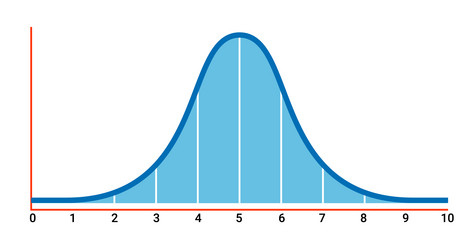
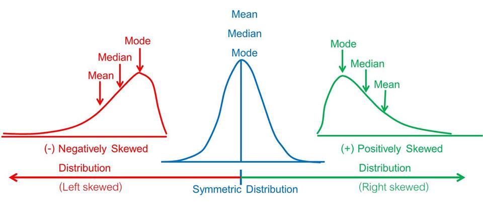
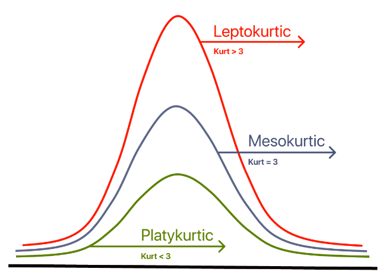

ডেটার আকার কথা বলে: ডিস্ট্রিবিউশন, স্কিউনেস ও কার্টোসিস
পরদিন সকালে লেকের রূপটা একদম অন্যরকম। গতকাল পানি যেমন আয়নার মতো স্থির ছিল, আজ আর তেমন নেই। কোথাও ছোট ছোট ঢেউ, কোথাও আবার একদম শান্ত। আবির অনেকক্ষণ ধরে পানির এই ওঠানামা দেখছিল। তার মনে হলো, পরিসংখ্যানের ডেটাও অনেকটা এই লেকের পানির মতোই। সব জায়গায় সমান থাকে না। কোথাও ভিড় বেশি, কোথাও একদম ফাঁকা। গতকাল তারা জেনেছে ডেটা কতটা ছড়ানো বা Dispersion নিয়ে, কিন্তু সেই ছড়ানোটা দেখতে আসলে কেমন সেটা বুঝতে পারাও অনেক গুরুত্বপূর্ণ।
ফারহান কফির মগ হাতে পাশে এসে দাঁড়াল। সে মজা করে জিজ্ঞেস করল, “কিরে, লেকের ঢেউ গুনছিস নাকি?”
আবির হাসল। “না রে। ভাবছিলাম, কালকে যেসব সংখ্যা নিয়ে আমরা কথা বললাম, যেমন গাণিতিক গড়, রেঞ্জ বা ভ্যারিয়েন্স, সেগুলো যদি আমরা গ্রাফ পেপারে ছবি এঁকে দেখি, তাহলে দেখতে কেমন দেখাবে?”
ফারহান বলল, “হয়তো কিছু ফোঁটা ফোঁটা দাগ হবে, তাই না?”
“শুধু এলোমেলো দাগ না,” আবির বুঝিয়ে বলল। “ডেটাগুলো যখন গ্রাফে সাজানো হয়, তখন তারা মিলে একটা নির্দিষ্ট আকার বা শেপ তৈরি করে। ডেটার এই আকারটাকেই পরিসংখ্যানে বলা হয় Distribution বা বিন্যাস। এর মানে হলো, ডেটাগুলো ঠিক কোথায় বেশি জড়ো হয়ে আছে, আর কোথায় কম আছে, সেটা চোখের সামনে ফুটে ওঠে।”
সাব্বিরও এসে তাদের সাথে যোগ দিল। সে জিজ্ঞেস করল, “শুধু ছবি দেখলেই কি সব বোঝা যাবে?”
আবির বলল, “পুরোপুরি না হলেও, ডেটার জগতে এই ছবির ধারণাটা খুব শক্তিশালী একটা বিষয়। ধর, আমরা এই রিসোর্টের ১০০ জন গেস্টের বয়সের তথ্য নিলাম। এখন যদি আমরা দেখি যে কতজন মানুষের বয়স ২০ থেকে ৩০ বছরের মধ্যে, আবার কতজন মানুষের বয়স ৩০ থেকে ৪০ বছরের মধ্যে, এভাবে গুনে গুনে যদি একটা তালিকা বা ছবি সাজাই, তাহলে আমরা যেটা পাবো, তাকে বলা হয় Frequency Distribution বা গণসংখ্যা নিবেশন। সোজা কথায়, এটা আমাদের বলে দেয় যে বাস্তবে আমাদের ডেটায় আসলে ঠিক কী ঘটেছে।”
ফারহান কৌতূহল নিয়ে বলল, “বর্তমান তো বুঝলাম, আর ভবিষ্যৎ?”
আবির মাথা নেড়ে বলল, “যখন আমরা ডেটার বর্তমান অবস্থা দেখে কোনো মানের ভবিষ্যৎ সম্ভাবনা নিয়ে কথা বলি, যেমন ভবিষ্যতে কোন বয়সের গেস্ট আসার সম্ভাবনা সবচেয়ে বেশি, তখন সেই ছবিটাকে বলা হয় Probability Distribution বা সম্ভাবনার বিন্যাস। একদম সহজভাবে বললে, Frequency Distribution হলো অতীতে ঘটে যাওয়া বাস্তব ঘটনার হিসাব, আর Probability Distribution হলো ভবিষ্যতে কী হতে পারে তার একটা সম্ভাবনার ছবি।”
ফারহান কফিতে একটা চুমুক দিয়ে লেকের দিকে তাকিয়ে রইল। তারপর বলল, “তোর ওই বাস্তব ঘটনার হিসাব আর সম্ভাবনার ছবি কথাটা মাথায় ঘুরছে। বিষয়টা কি আরেকটু ক্লিয়ার করে বলবি? সম্ভাবনা বা Probability দিয়ে আমরা ভবিষ্যৎ কীভাবে দেখতে পারি?”
আবির হাসল। সে পকেট থেকে কাল রাতের খেলা একটা লুডুর ছক্কা বের করে ফারহানের হাতে দিল। “চল, এই ছক্কাটা দিয়েই বিষয়টা বুঝি। তুই এখন এই ছক্কাটা ১০ বার চাল।”
ফারহান ছক্কা চালতে শুরু করল। আর সাব্বির মনোযোগ দিয়ে সেটার হিসাব রাখতে লাগল। ১০ বার চালার পর দেখা গেল, ১ পড়েছে ২ বার, ২ পড়েছে ০ বার, ৩ পড়েছে ৪ বার, ৪ পড়েছে ১ বার, ৫ পড়েছে ২ বার এবং ৬ পড়েছে ১ বার।
আবির বলল, “এই যে সাব্বির এতক্ষণ ধরে হিসাবটা খাতায় লিখল, এটা হলো আমাদের Frequency Distribution। এটা একদম সলিড এবং প্রমাণিত বাস্তব। ১০ বার ছক্কা চালার পর ঠিক কী কী ফলাফল এসেছে, এটা হলো তার একটা সরাসরি রেকর্ড। এখানে দেখা যাচ্ছে ৩ সংখ্যাটি সবচেয়ে বেশি বার পড়েছে, আর ২ সংখ্যাটি একবারও পড়েনি।”
ফারহান মাথা নাড়ল এবং বলল, “বুঝতে পেরেছি। এটা হলো আমাদের অতীত বা বাস্তব ডেটা।”
“একদম ঠিক বলেছিস,” আবির সায় দিল। “এবার তুই একটু চিন্তা করে আমাকে বল, তুই যদি এখন ১১ নম্বর বারের মতো ছক্কাটা চালিস, তাহলে কি ৩ পড়ার সম্ভাবনা সবচেয়ে বেশি থাকবে? নাকি ২ পড়ার কোনো সম্ভাবনাই থাকবে না, যেহেতু আগে একবারও ২ পড়েনি?”
ফারহান একটু ভেবে বলল, “আরে না! ছক্কার তো ছয়টা পিঠই একদম সমান। আগেরবার যা ইচ্ছা তা ই পড়ুক না কেন, পরেরবার যেকোনো সংখ্যা পড়ার চান্স তো আগের মতোই সমান থাকবে। প্রতিটা সংখ্যা পড়ার চান্সই তো ৬ ভাগের ১ ভাগ।”
আবির তুড়ি বাজিয়ে উৎসাহ নিয়ে বলল, “এই তো তুই আসল বিষয়টা ধরে ফেলেছিস! এই যে তুই হিসাব করে বললি প্রতিটা সংখ্যা পড়ার চান্স ৬ ভাগের ১ ভাগ বা প্রায় ১৬.৬৭ শতাংশ, ঠিক এটাই হলো Probability Distribution। এটা কোনো অতীতের ঘটে যাওয়া ডেটা নয়, বরং এটা হলো ছক্কাটার আচরণের একটা গাণিতিক মডেল বা ভবিষ্যতের সম্ভাবনার ছবি।”
আবির বালিতে দুটো গ্রাফ আঁকার ভঙ্গি করে বলতে শুরু করল, “Frequency Distribution হলো অনেকটা ক্যামেরায় তোলা একটা সাময়িক স্ন্যাপশটের মতো। তুই মাত্র ১০ বার ছক্কা চাললে ডেটা একটু এলোমেলো মনে হতেই পারে। তোর মনে হতে পারে ৩ বুঝি তোর জন্য খুব লাকি নাম্বার। কিন্তু Probability Distribution আমাদের এই সাময়িক বিভ্রম থেকে বাঁচিয়ে আসল সত্যিটা বা ভবিষ্যতের মূল নকশাটা বলে দেয়।”
সাব্বির এতক্ষণ চুপচাপ শুনছিল, এবার সে বলে উঠল, “তার মানে দাঁড়াচ্ছে, আমরা যদি অনেকবার ছক্কা চালি, তাহলে ঠিক কী হবে?”
“দারুণ একটা প্রশ্ন করেছিস!” আবির বলল। “তুই যদি ছক্কাটা মাত্র ১০ বার না চেলে ১০ হাজার বার চালিস, তাহলে অবাক হয়ে দেখবি ওই ২ বা ৩ পড়ার হার একদম কাছাকাছি চলে এসেছে। তখন সবগুলো সংখ্যা পড়ার হারই ওই ১৬.৬৭ শতাংশের আশেপাশে থাকবে। অর্থাৎ, বাস্তব ঘটনা বা Frequency এর পরিমাণ তুই যত বাড়াতে থাকবি, ডেটা শেষ পর্যন্ত গিয়ে ওই সম্ভাবনার মূল নকশার বা Probability Distribution এর সাথেই পুরোপুরি মিলে যাবে।”
আবির এবার পুরো আলোচনার উপসংহার টানল, “বাস্তব জীবনের গবেষণায় আমরা ঠিক এই কাজটাই করে থাকি। আমরা হয়তো অল্প কিছু মানুষের কাছ থেকে ডেটা বা Frequency সংগ্রহ করি। কিন্তু আমাদের আসল উদ্দেশ্য থাকে ওই সংগৃহীত ডেটার পেছনের Probability Distribution বা মূল নকশাটাকে খুঁজে বের করা। যাতে আমরা খুব সহজেই বুঝতে পারি ভবিষ্যতে বা বৃহত্তর পরিসরে জিনিসটা ঠিক কেমন আচরণ করবে।”
কথা বলতে বলতে তিনজন লেকের পাড় ধরে হাঁটতে লাগল। হাঁটতে হাঁটতে আবির হঠাৎ এক জায়গায় থেমে গেল। সে ভেজা বালি দিয়ে একটা উল্টানো বাটির মতো আকৃতি বানাল, যার মাঝখানটা বেশ উঁচু, আর দুই পাশ ধীরে ধীরে ঢালু হয়ে নিচের দিকে নেমে গেছে।
“এই যে শেপটা দেখছিস, এটা পরিসংখ্যানের জগতে এক কথায় সুপারস্টার!” আবির হাসিমুখে বলল। “এই আকারটাকে বলা হয় Normal Distribution বা পরিমিত বিন্যাস।”

গ্রাফঃ নরমাল ডিস্ট্রিবিউশন
সাব্বির অবাক হয়ে জিজ্ঞেস করল, “সবাই শুধু এই একটা নির্দিষ্ট শেপ বা আকার নিয়ে এত কথা বলে কেন?”
“এর মূল কারণ হলো, বাস্তব জীবনের অনেক ডেটাই প্রাকৃতিকভাবে বা নিজে থেকেই এই আকার ধারণ করে,” আবির ব্যাখ্যা করতে শুরু করল। “উদাহরণস্বরূপ ধর, মানুষের উচ্চতা বা পরীক্ষার নম্বরের কথা। খুব কম মানুষই একেবারে অনেক বেশি লম্বা হয়, আবার একেবারে অনেক বেশি খাটো মানুষের সংখ্যাও কিন্তু বেশ কম। বেশিরভাগ মানুষই থাকে মাঝামাঝি বা গড় উচ্চতার কাছাকাছি। ঠিক এই কারণেই গ্রাফের মাঝখানের অংশটা, অর্থাৎ গড়ের জায়গাটা উঁচু হয়ে থাকে, আর দুই পাশের প্রান্তগুলো আস্তে আস্তে নিচু হয়ে যায়।”
ফারহান একটু ভেবে বলল, “তার মানে বলা যায়, এটা একটা দারুণ ব্যালেন্সড বা ভারসাম্যপূর্ণ শেপ, তাই তো?”
“একদম ঠিক বলেছিস,” আবির বলল। “এই ধরনের সুষম ডিস্ট্রিবিউশনকে পরিসংখ্যানে বলে Symmetric Distribution। এখানে ডেটা তার গাণিতিক গড়ের দুই পাশে প্রায় সমানভাবে ছড়ানো অবস্থায় থাকে।”
এরপর আবির বালির সেই বাটিটা হাত দিয়ে মুছে ফেলল এবং নতুন একটা ছবি আঁকল। এবার পাহাড়ের চূড়াটা মাঝখানে না থেকে একপাশে সরে গেছে, আর অন্য পাশে তৈরি হয়েছে একটা লম্বা লেজের মতো অংশ।
“কিন্তু বাস্তব জীবনের সব ডেটা সব সময় এত সুন্দর আর ব্যালেন্সড হয় না,” আবির বুঝাতে শুরু করল। “অনেক সময় ডেটা সুষম না হয়ে কোনো একদিকে বেশি ঝুঁকে থাকে বা হেলে পড়ে। ডেটার এই একদিকে ঝুঁকে থাকা বা বেঁকে থাকাকেই পরিসংখ্যানে বলা হয় Skewness।”
সে বিষয়টা আরও পরিষ্কার করে বলল, “গ্রাফের লেজটা ঠিক যেদিকে লম্বা হয়ে ছড়িয়ে থাকে, স্কিউনেসের নামটাও সেভাবেই দেওয়া হয়। লেজটা ডান দিকে লম্বা হয়ে গেলে তাকে বলে Right-Skewed বা ডান দিকে বাঁকা, আর লেজটা বাম দিকে লম্বা হলে তাকে বলে Left-Skewed বা বাম দিকে বাঁকা।”
ফারহান বলল, “তাত্ত্বিক কথার চেয়ে বরং একটা প্র্যাকটিক্যাল বা বাস্তব জীবনের উদাহরণ দে। তাহলে বুঝতে সুবিধা হবে।”

গ্রাফঃ স্কিউনেস
“ধর, মানুষের আয়ের কথা,” আবির বলল। “আমাদের সমাজে খেয়াল করলে দেখবি, বেশিরভাগ মানুষের আয়ই কম বা মাঝারি সীমার মধ্যে থাকে। ফলে গ্রাফের বাম দিকে একটা বড় চূড়া তৈরি হয়। কিন্তু এমন অল্প কিছু মানুষ আছেন, যাদের আয় আকাশছোঁয়া! ওই অল্প কয়েকজন অতি-ধনী মানুষের ডেটাই গ্রাফের ডান দিকে একটা লম্বা লেজের মতো অংশ তৈরি করে দেয়। এটাই হলো Right-Skewed বা ধনাত্মক বঙ্কিমতার একটা দারুণ বাস্তব উদাহরণ।”
সাব্বির মাথা নেড়ে বলল, “ওহ, এবার বুঝলাম! তার মানে গ্রাফের লেজটা দেখেই আমরা খুব সহজে ডেটার ঝোঁকটা ধরে ফেলতে পারব!”
“একদম ঠিক ধরেছিস!” আবির হাসিমুখে সায় দিল।
লেকের পাড় ধরে কিছুটা এগিয়ে গিয়ে আবির আবার দাঁড়াল। সে বলল, “তবে ডেটার আকার বোঝার জন্য শুধু লেজ বা স্কিউনেস দেখলেই হবে না, আরও একটা গুরুত্বপূর্ণ জিনিস আছে। ডেটার চূড়াটা ঠিক কতটা খাড়া বা কতটা চ্যাপ্টা, সেটাও এনালাইসিসের জন্য খুব দরকারি একটা বিষয়।”
সে দুই হাত দিয়ে পাহাড়ের মতো আকার বানিয়ে দেখিয়ে বলল, “ধর, পাশাপাশি দুটো পাহাড় আছে। দুটো পাহাড়ই দেখতে একদম ব্যালেন্সড বা সিমেট্রিক। কিন্তু এদের মধ্যে একটা পাহাড় খুব খাড়া হয়ে ওপরে উঠে গেছে, আর অন্যটা বেশ চ্যাপ্টা বা সমতল টাইপের। ডেটার চূড়ার ঠিক এই পার্থক্যটাই মাপা হয় Kurtosis দিয়ে।”

গ্রাফঃ কার্টোসিস
আবির বিষয়টা আরও সহজ করে বুঝিয়ে বলল, “কার্টোসিস মূলত আমাদের এটা বলে দেয় যে, ডেটাগুলো কতটা তার কেন্দ্রের দিকে একসাথে জটলা পাকিয়ে আছে, আর দুই প্রান্তের চরম মানগুলো বা Extreme values গুলো ডেটাতে কতটা প্রভাব ফেলছে।”
সাব্বির হো হো করে হেসে উঠল এবং বলল, “তোর এত কথার সারমর্ম হলো, সহজ কথায় ডেটার পেট মোটা নাকি চিকন, সেটা দেখাই হলো কার্টোসিসের কাজ, তাই তো?”
“দারুণ বলেছিস!” আবির হাসতে হাসতে সায় দিল। “গ্রাফের চূড়া যত খাড়া হবে, তুই বুঝবি ডেটা তত বেশি তার কেন্দ্রের কাছাকাছি বা গড়ের আশেপাশে জড়ো হয়ে আছে। আর চূড়া যত চ্যাপ্টা হবে, বুঝতে হবে ডেটা তত বেশি চারপাশে ছড়িয়ে ছিটিয়ে আছে।”
ফারহান এবার একটু সিরিয়াস হয়ে একটা প্রশ্ন করল, “আচ্ছা, এই Skewness আর Kurtosis কষ্ট করে মেপে আমাদের আসল লাভটা কী? আমরা এগুলো কেন শিখছি?”
আবির গুছিয়ে উত্তর দিল, “সবচেয়ে বড় লাভ হলো, আমাদের সংগৃহীত ডেটা আসলেই Normal Distributed কি না, সেটা বৈজ্ঞানিকভাবে পরীক্ষা করা। যেকোনো গবেষণায় এটা জানা খুব জরুরি। কারণ, ডেটা আসলে নরমাল কি না, সেটার ওপর ভিত্তি করেই আমাদের পরবর্তী অনেক পরিসংখ্যানিক সিদ্ধান্ত নিতে হয়। মনে রাখবি, একটা নিখুঁত নরমাল ডিস্ট্রিবিউশনের স্কিউনেস সবসময় শূন্য হয়, মানে সে ডান বা বাম কোনো দিকেই হেলে থাকে না। একইভাবে কার্টোসিসেরও একটা নির্দিষ্ট আদর্শ মাপ থাকে। মূলত এই স্কিউনেস আর কার্টোসিসের মান হিসাব করেই গবেষকেরা নিশ্চিত হন যে, তাদের ডেটা স্বাভাবিক বা নরমাল প্যাটার্নে আছে, নাকি তাতে কোনো বড় ধরনের অস্বাভাবিকতা লুকিয়ে আছে।”
শেষে আবির কিছুটা গম্ভীর হয়ে বলল, “আর ঠিক এই কারণেই শুধুমাত্র গাণিতিক গড় দেখে চট করে কোনো সিদ্ধান্ত নেওয়াটা অনেক বড় একটা বোকামি। কোনো ডেটা নিয়ে কাজ করার আগে প্রথমেই দেখতে হবে ডেটার ডিস্ট্রিবিউশন বা আকারটা আসলে কেমন। এটা কি নরমাল? নাকি কোনো একদিকে স্কিউড হয়ে আছে? নাকি চূড়াটা খুব বেশি খাড়া বা চ্যাপ্টা? ডেটার এই আসল চেহারাটা না বুঝে সামনে আগানো ঠিক না।”
লেকের পাড়ে বসে তিনজন বিশ্রাম নিচ্ছিল। সূর্য এখন ঠিক মাথার ওপরে, কড়া রোদ চারদিকে ছড়িয়ে পড়েছে।